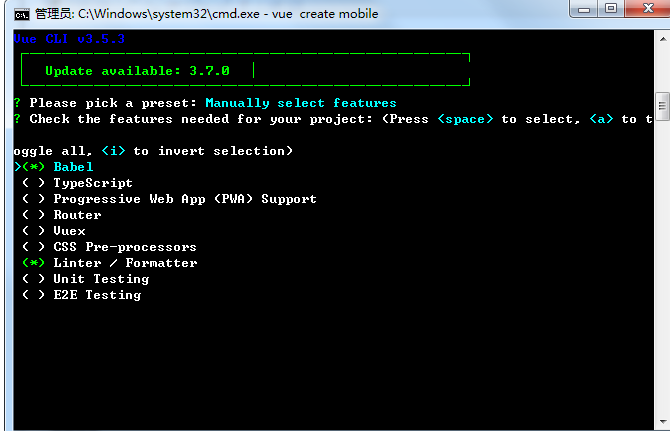
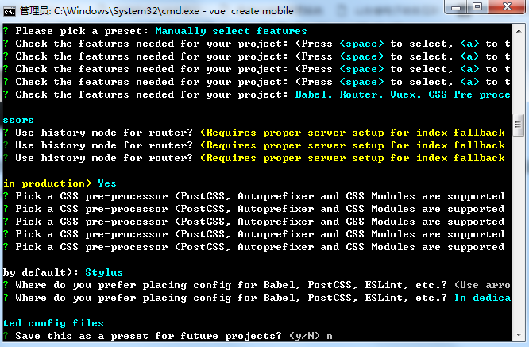
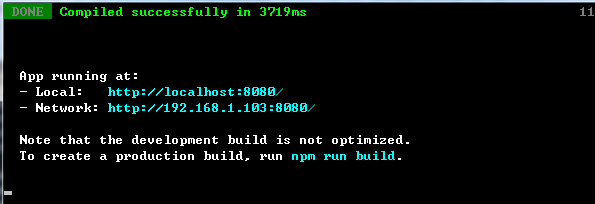

原文出处:本文由博客园博主走在学习的路上提供。
原文连接:https://www.cnblogs.com/codingstudy/p/10898667.html
原文连接:https://www.cnblogs.com/codingstudy/p/10898667.html
一、搭建工作环境环境
1、从node.js官网下载相应版本进行安装即可 https://nodejs.org/zh-cn/download/，安装完成后在命令行输入 node -v 如果可以查询到版本号，说明安装成功。
2、node自带npm包管理工具，在命令行输入 npm -v 如果查询到版本号，说明正常
3、npm下载太慢，需要下载国内淘宝镜像： npm install -g cnpm --registry = https://registry.npm.taobao.org，安装完成后输入 cnpm -v 显示版本号，说明正常
4、安装webpack（包管理工具），命令行输入 cnpm i webpack -g ，-g说明是全局安装
5、安装vue.cli 3.X脚手架，命令行输入 cnpm i @vue-cli -g 不选择版本号，将下载最新的稳定版本，输入vue -V 可查看版本
二、创建项目
1、命令行 进入项目目录
2、创建项目：vue create 项目名称（不要有中文），选择manually select进行选择
3、进入选择界面

根据项目需求，点击空格进行选择，一般情况下babel、router、vuex、 css都是需要的，然后回车进行创建项目
4、创建时会询问之前选择项目的配置，根据自身项目 要求进行配置，下图是我的配置

最后选择是否作为默认配置，根据个人需要进行选择即可，然后回车，项目开始下载模板
5、创建完成后，进入项目目录，输入cnpm run serve 即可启动项目，登陆后界面如下图
